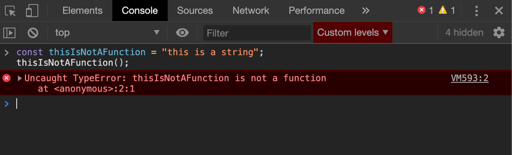
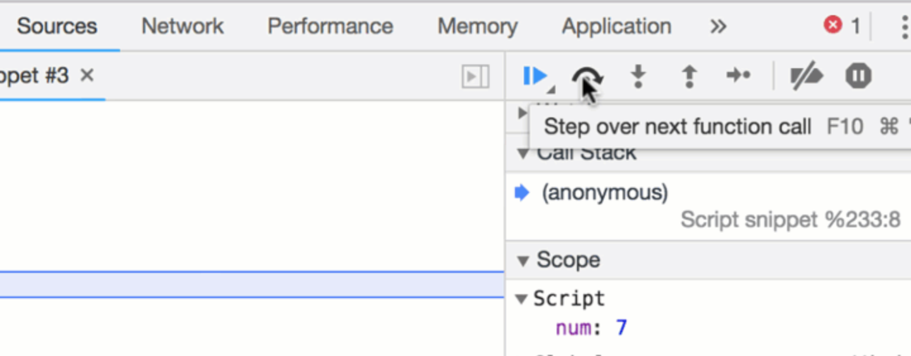

Debugging JavaScript 101
Basic JavaScript debugging tools for beginners.
Back in 1945, computers were as big as football fields with giant wires everywhere. On September 9th, 1945, U.S Navy officer Grace Hopper, a pioneer of computer programming, was experiencing a malfunction on the computer she was working on (Harvard Mark I). She explored the wires and between two spots on a relay, she noticed that there was a dead bug on the wire causing a malfunction. They even taped the bug and recorded the story in a log book. Thus, birthing the terms “bug” and "debugging".

VOCABULARY LESSON:
Back then, a bug was a LITERAL bug.
Today, a bug is just an error in your program.
Debugging is the term used to describe the process of fixing the error.
Syntax bugs are errors caused by something typed – it could be a spelling mistake or a command that the computer doesn’t understand, so it is unable to execute properly.
Logical bugs are errors where even though the computer is able to carry out its instructions, it doesn’t act as the programmer intended or the user expects.
FUN FACT: Developers spend more time debugging code, than they do writing it
Therefore, it is vital to be up to parr on your debugging skills. The better you are at diagnosing your bugs, the more time you save.
Pro-tip: Don’t be a show-off and write clever code that is hard to read - it will be 10x harder to debug for you, and other developers who may need to debug it in the future….
"Cool story. But how the heck do I know that the bug is an error in my JavaScript???"
If you’re interactive functionality isn’t working properly, you’re likely experiencing JavaScript errors or conflicts. For example, if you build a calculator and you attempt to add 5 + 1 and the result is 51, there is an error in your JavaScript code. It’s important to know how to diagnose these errors and how to maximize the tools accessible to you to fix them.
"Okay, gotcha. Teach me how to squash these bugs!"
There are a lot of ways and tools to debug JavaScript- in this post, I’m going to talk about the 4 very basic tools understand ordered by level of power.
#1 THE SIMPLE "SHOO FLY" METHOD
RUBBERDUCKING
Rubberducking is a method of debugging from the 1999 book The Pragmatic Programmer. The process involves the following:
- Obtain a rubber duck (or another inanimate object)
- Explain to your rubber ducky what your code is supposed to do.
- Go over your code line-by-line explaining what each line is doing in great detail.
- At some point, you hopefully get to a spot in your code where what you tell the duck you are trying to does not align with what are actually doing in your code base
- You kiss your rubber ducky, fix your code and voilà!
#2 THE GOOD OL' FLY SWATTER
READING JAVASCRIPT ERROR MESSAGES
If you’re functionality isn’t working right, the first instinct you should have is to open your console and see if there are any errors.
"COOL. NO clue how to do that..."
- Open your console Every browser has a console for you to use - and a console provides you with the ability to write, manage and monitor your JavaScript code on demand. To open the developer console window on Chrome, use the keyboard shortcut
- Identify the error - located in your console in red Don’t be overwhelmed if there are a lot of lines and cryptic info in the stack trace. Look for the file or files you were working on and look at the line number of the error.  You can see that this error is a TypeError in line 2, index 1 of the file "Anonymous"
- Locate the error in your code base the console will provide you with the error type, the location/file of the error and the line number of the error.
- Fix the error! Sometimes fixing it might involve the next two steps of debugging
Cmd+Shift+J (on Windows) or Cmd+Option+J(on Mac)
#3 THE ELECTRIC BUG ZAPPER
CONSOLE.LOG();
Your console gives you access to the console object which includes methods you can utilize to inspect your program.
Console.log() is one of the methods on the console object that outputs a message to the web console. It can be extremely useful when debugging, because it allows you to examine different aspects of your code. You can examine variables or determine whether the logic in your program is executing correctly.
For example, if you have an `if` statement and you want to see whether the `if` statement’s code executes, you can utilize console.log()
- Insert
console.log();into your JavaScript - Inside of the parentheses, add the things you want to be displayed on the screen in the console EX:
- When the browser executes your JavaScript and sees an expression like that, it knows that it's supposed to log the message to the Console
console.log('This is HelloWorld Func', helloWorld();)
Console.log() is a simple debugging tool that doesn’t require any set-up making it convenient to use for an abundant amount of reasons.
See other methods you can utilize from the console object here
#4 THE MR. MIYAGI METHOD

CHROME DEVTOOLS DEBUGGER
Console.log(); is great to use when debugging smaller pieces of code. However, when your code base grows, or you find yourself using multiple console.logs to debug, you may find yourself playing a wild goose chase trying to find the location of your bug. This can become tedious and you might consider using a more powerful tool.
How to use the debugger:
- Place the
debugger;keyword in the spot where you want the debugger to pause your code. - Open your console -- your console must be open for this to work!
- Go to the Sources Tab in your dev tools
- Use the stepover function.  The stepover function lets you go through your program line by line. You will see what variables are evaluated as under the “Script” section.
- See where variables are being evaluating incorrectly, and SQUASH THAT BUG!
Debugging is part of the testing process and is an integral part of the entire software development lifecycle. Something working and being bug-free the first time you do it, in programming will RARELY ever happen. If you aren't able to diagnose, locate, and correct the error, then you might not ever have a properly functioning program.
SO, get your rubber ducky and all your fly swat gear ready - time to train with Mr. Miyagi!
Helpful Links:

Sarah Buckingham
I love to find innovative solutions to social problems. Working in Social Work, I’ve seen how tech can help reach vulnerable populations; helping people make more informed decisions, creating ways for people to connect, and giving people access to the tools they need to have agency in their own lives. The myriad of possibilities piqued my interest and so I decided to pursue an education at Fullstack Academy to become a software engineer to put my innovative ideas at play.I am a mother of two VERY strong-willed children, and two rambunctious dogs. When I am not coding, I'm off hiking in the Pacific Northwest, traveling abroad, or have my nose in a captivating book. I have a strong passion for music and a deep love for black and white film photography. I am excited to continue to couple my expertise in Social Work with my passion as a full-stack developer to have a positive and lasting impact on the lives of many.
Learn Digital Skills
Find out when the next cohort begins!
The most comprehensive program to up your game in the remote career world.
Learn More